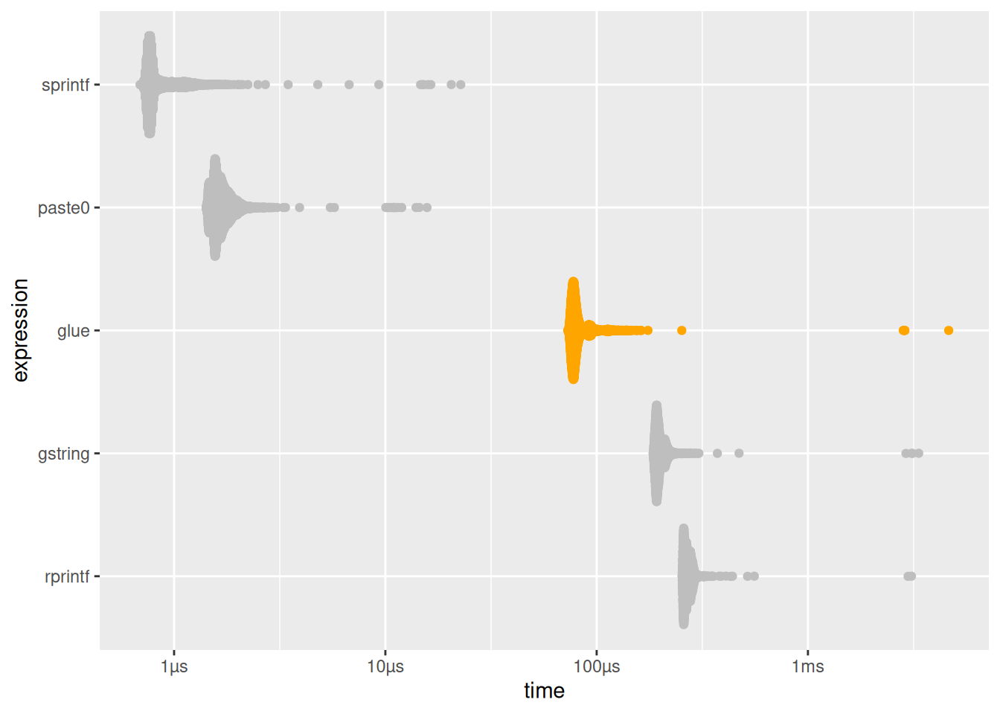
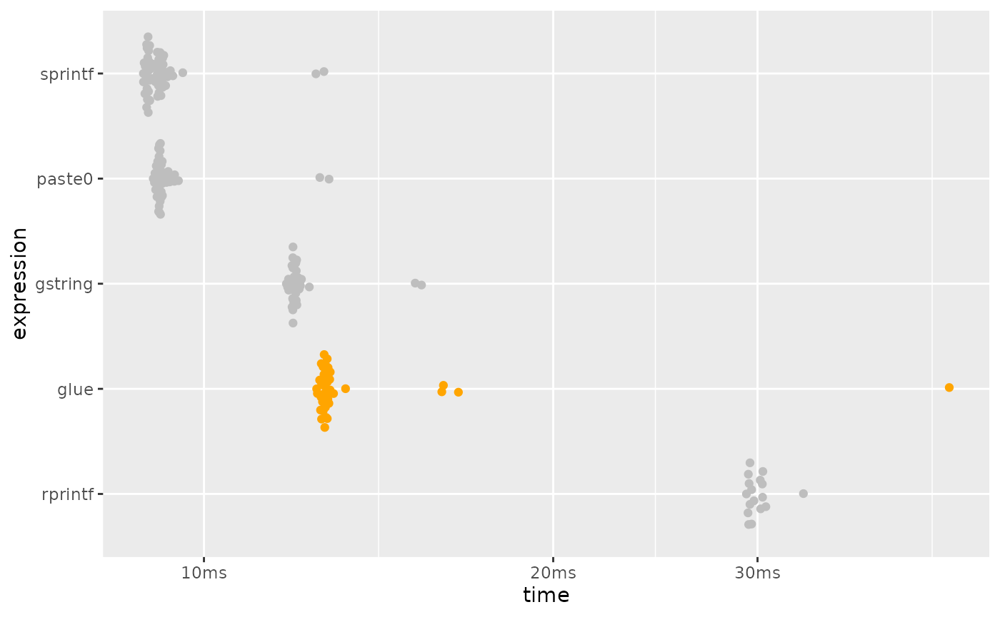

Glue is advertised as
Fast, dependency free string literals
So what do we mean when we say that glue is fast? This does not mean glue is the fastest thing to use in all cases, however for the features it provides we can confidently say it is fast.
A good way to determine this is to compare its speed of execution to some alternatives.
-
base::paste0(),base::sprintf(): Functions in base R implemented in C that provide variable insertion (but not interpolation). -
R.utils::gstring(): Provides a similar interface as glue, but uses${}to delimit blocks to interpolate. -
pystr::pystr_format()1,rprintf::rprintf(): Provide an interface similar to python string formatters with variable replacement, but not arbitrary interpolation.
Note: stringr::str_interp() was previously included in this benchmark, but is now formally marked as “superseded”, in favor of stringr::str_glue(), which just calls glue::glue().
Simple concatenation
bar <- "baz"
simple <- bench::mark(
glue = as.character(glue::glue("foo{bar}")),
gstring = R.utils::gstring("foo${bar}"),
paste0 = paste0("foo", bar),
sprintf = sprintf("foo%s", bar),
rprintf = rprintf::rprintf("foo$bar", bar = bar)
)
simple |>
select(expression:total_time) |>
arrange(median)
#> # A tibble: 5 × 6
#> expression min median `itr/sec` mem_alloc `gc/sec`
#> <bch:expr> <bch:tm> <bch:tm> <dbl> <bch:byt> <dbl>
#> 1 sprintf 742.03ns 791.16ns 1174045. 0B 0
#> 2 paste0 1.42µs 1.57µs 603452. 0B 0
#> 3 glue 93.77µs 101.22µs 9443. 141.73KB 10.3
#> 4 gstring 225.27µs 240.31µs 4051. 2.46MB 6.12
#> 5 rprintf 279.07µs 292.74µs 3344. 504.02KB 4.05
# plotting function defined in a hidden chunk
plot_comparison(simple)
While glue() is slower than paste0 and sprintf(), it is twice as fast as gstring(), and rprintf().
Although paste0() and sprintf() don’t do string interpolation and will likely always be significantly faster than glue, glue was never meant to be a direct replacement for them.
rprintf::rprintf() does only variable interpolation, not arbitrary expressions, which was one of the explicit goals of writing glue.
So glue is ~2x as fast as the function (gstring()), which has roughly equivalent functionality.
It also is still quite fast, with over 8000 evaluations per second on this machine.
Vectorized performance
Taking advantage of glue’s vectorization is the best way to improve performance. In a vectorized form of the previous benchmark, glue’s performance is much closer to that of paste0() and sprintf().
bar <- rep("bar", 1e5)
vectorized <- bench::mark(
glue = as.character(glue::glue("foo{bar}")),
gstring = R.utils::gstring("foo${bar}"),
paste0 = paste0("foo", bar),
sprintf = sprintf("foo%s", bar),
rprintf = rprintf::rprintf("foo$bar", bar = bar)
)
vectorized |>
select(expression:total_time) |>
arrange(median)
#> # A tibble: 5 × 6
#> expression min median `itr/sec` mem_alloc `gc/sec`
#> <bch:expr> <bch:tm> <bch:tm> <dbl> <bch:byt> <dbl>
#> 1 sprintf 8.32ms 8.35ms 119. 781.3KB 4.19
#> 2 paste0 8.4ms 8.44ms 113. 781.3KB 4.19
#> 3 gstring 11.35ms 11.54ms 86.6 1.53MB 4.23
#> 4 glue 12.85ms 13.08ms 75.8 2.29MB 6.89
#> 5 rprintf 27.74ms 27.85ms 35.9 3.05MB 4.49
# plotting function defined in a hidden chunk
plot_comparison(vectorized)